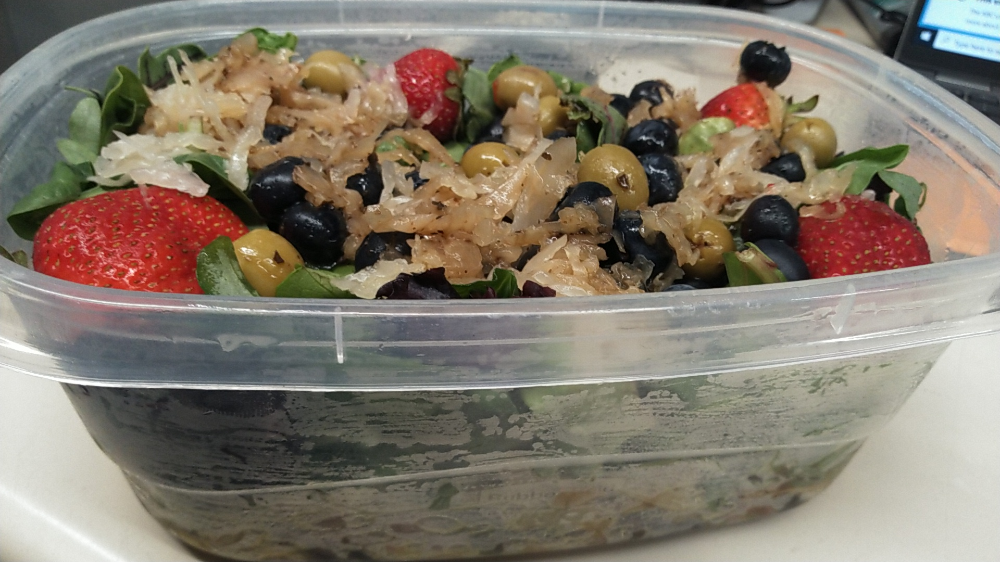

Home
Remember, good cooking is about Experimentation!
Law's Healthy Salad

A very well rounded salad that feeds the body, brain, and gut!
Ingredients
- The One Bean soy bean fettucini.
- Spring mix and Spinach
- Onions
- Tomatoes
- Sauerkraut
- Additional vegetables of choice.
- Berries of your choice
- Olive oil
- Dressing of your choice
Prep Instructions
This makes about one large bowl of salad that can serve as a meal.
- Prep the pasta per the box instructions.
- Lay the pasta in the bed of the bowl, add oil.
- Add the lettuces.
- Add the remaining ingredients.
- Top off with a touch of your favorite dressing.
- Enjoy!